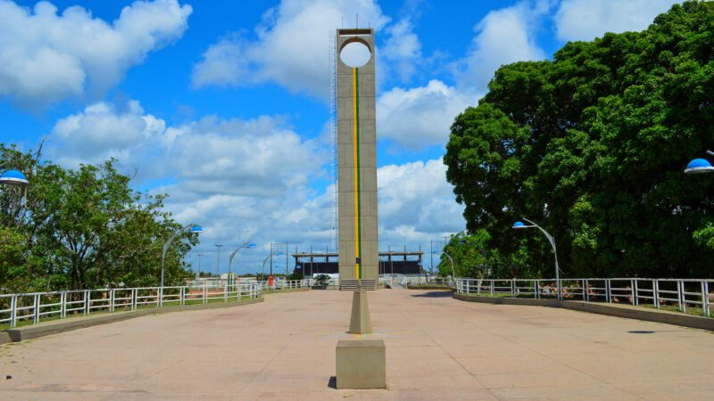
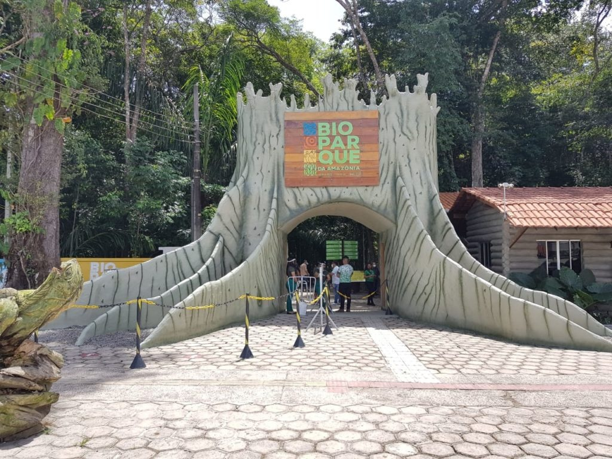
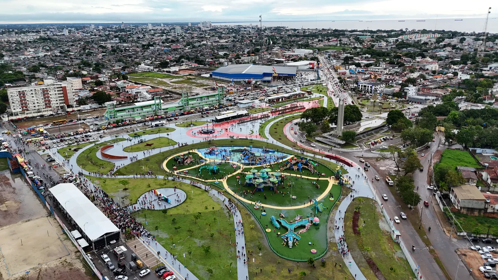
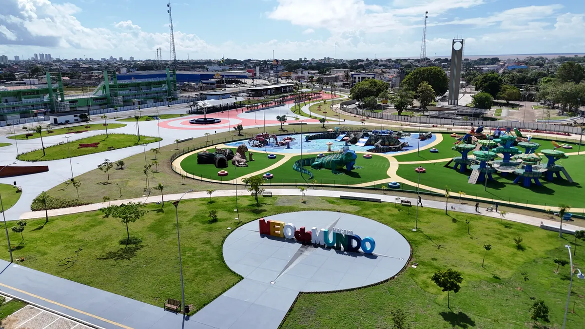

Macapá, pérola amazônica à beira do majestoso Rio Amazonas, surpreende com sabores únicos e cultura vibrante. Da culinária típica com peixe no tucupi às feiras e barracas de rua, exploramos a capital do Amapá e suas experiências autênticas no coração da Amazônia.
Para os amantes de história
Descubra 3 destinos imperdíveis em Macapá-AP

As atrações de Macapá vão desde monumentos históricos às margens do Rio Amazonas até trilhas ecológicas em meio à floresta. A cidade, cortada pela linha do Equador, oferece opções o ano todo — famílias podem visitar museus interativos, amantes da cultura exploram feiras e centros culturais, enquanto os aventureiros aproveitam passeios de barco e caminhadas com vista para o rio.
Os marcos históricos como a Fortaleza de São José de Macapá e o Marco Zero encantam fotógrafos com sua arquitetura única e localização privilegiada entre os dois hemisférios.
fortaleza de sao jose
A Fortaleza de São José de Macapá é um dos mais importantes patrimônios históricos e culturais da Amazônia. Erguida em 1764 pelos portugueses, foi construída para defender a região de invasões estrangeiras na foz do Rio Amazonas. Com arquitetura militar no estilo Vauban, abriga séculos de história em seus muros de pedra. Hoje, além de seu valor simbólico, é um espaço de memória, arte e cultura, oferecendo aos visitantes uma imersão na história colonial da região e uma vista deslumbrante do maior rio do mundo.
Bom para:
historia
familia
visitas

Bioparque
O Bioparque da Amazônia é um dos principais espaços ecológicos e de lazer de Macapá. Localizado em uma vasta área de floresta nativa, oferece refúgio tranquilo longe da agitação urbana. O parque abriga diversas espécies da fauna e flora amazônicas, além de trilhas ecológicas, viveiros e espaços educativos, sendo um exemplo de preservação ambiental e valorização da biodiversidade da região.
bom para:
Aventura
Historia
Familia
Visitas


Meio do Mundo (Linha do Equador)
O Monumento Marco Zero, localizado em Macapá, marca a passagem exata da linha do Equador e é um dos pontos turísticos mais emblemáticos da cidade. Do alto de sua torre, é possível observar o sol nascer e se pôr exatamente sobre a linha equatorial, que divide os hemisférios Norte e Sul. Próximo ao monumento está o Estádio Milton de Souza Corrêa, onde a linha do Equador também cruza o meio do campo — uma curiosidade única no mundo. O complexo ainda conta com espaços culturais, feiras de artesanato e eventos regionais, oferecendo uma experiência inesquecível no coração do planeta.